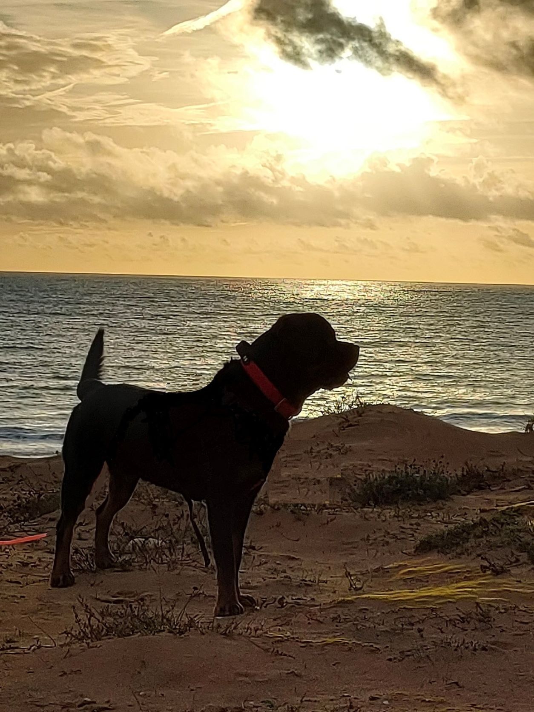
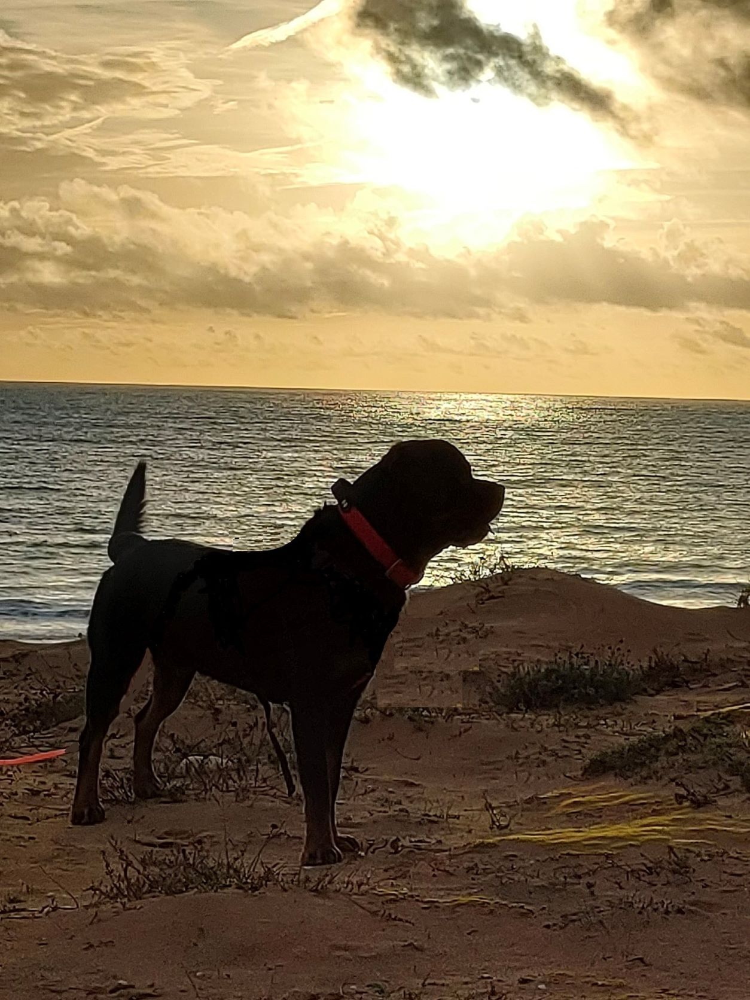

Entre Maître & Chien
Sandrine votre éducatrice canin
06 11 54 77 34
 


J'ai suivi une formation professionnelle d'éducateur canin au centre international canin SYM DOG de Gérôme Bouchez à Aubagne, formation spécialisée en chiens difficiles et/ou mordeurs.
Puis j'ai obtenu l'ACACED (Attestation de Connaissances pour Animaux de Compagnie et d'Espèces Domestiques) obligatoire à l'exercice de l'éducation canine.
Cette formation en immersion totale avec mises en situations réelles auprès de propriétaires de chiens difficiles m'a permis d'appréhender beaucoup de problématiques autour des troubles comportementaux et surtout d'apprendre les différentes méthodes d'apprentissage d'éducation et/ou de rééducation en fonction du caractère du chien, de sa race et de son environnement.
Le plus important étant que rien n'est définitif. Malgré l'âge ou la problématique de votre compagnon, il y a toujours une solution et cela sans violence ni contraintes physiques ou psychologiques.
Je me déplace sur un secteur de 15km autour de Corbeil-Essonnes et nous prendrons rendez-vous à votre domicile ou dans un parc selon vos besoins. Possibilité de déplacement sur l'Île de France.